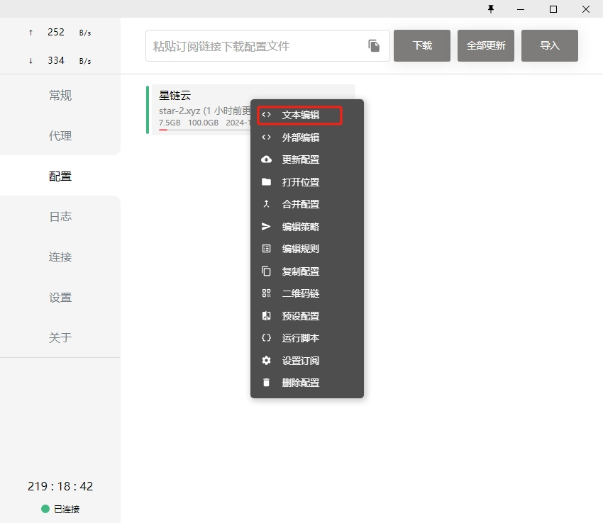

从源代码构建 Carla
用户可以从源代码构建 Carla 以用于开发目的。如果您想要向 Carla 添加额外的特性或功能，或者想要使用虚幻编辑器创建资源或操作地图，则建议您这样做。
构建说明适用于 Linux 和 Windows。您还可以在 Docker 容器中构建 Carla，以便部署在 AWS、Azure 或 Google 云服务中。访问 Carla GitHub 并克隆存储库。
科学上网
参考其中的一个链接进行科学上网的订阅和环境配置：链接1 、链接2 、链接3 、链接4 。
Ubuntu 下的配置
首次启动clash，会新建文件~/.config/clash/config.yaml：
cd $HOME/.config/clash/

将Clash中的订阅地址写入config.yaml文件。
打开 Ubuntu 的“设置”管理，在“网络”内将“网络代理”的“自动”改为“手动”，根据以下内容进行填写 HTTP、HTTPS 和 Socks 地址
# HTTP 代理
127.0.0.1:7890
# HTTPS 代理
127.0.0.1:7890
# Socks 主机
127.0.0.1:7891
TortoiseGit 网络代理配置
如果使用TortoiseGit作为git的